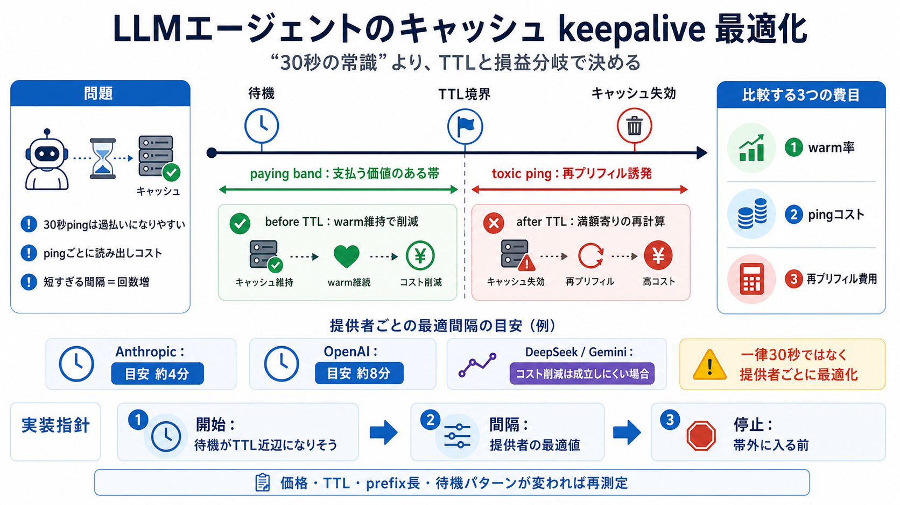

狙い（目的）
warm率を維持（暖機）warm rate

LLMエージェントのプロンプトキャッシュは、TTL（有効期限）とping（keepalive）コストの釣り合いで得にも損にもなります。
待機（アイドル）中に一定間隔で問い合わせして、キャッシュを暖め続ける運用が広まっています。 しかしその間隔が短すぎると、節約のつもりが過払いになります。
プロンプトキャッシュはTTL（time-to-live：有効期限）があり、時間が経つと再利用できなくなります。 エージェントは「考える→行動→待つ→再問い合わせ」になりやすく、待機がTTLをまたぎやすいです。
keepaliveが得になるのは、「キャッシュが死ぬ前」かつ「pingが再プリフィル回避の価値を超えない」待機時間帯だけです。 その帯を著者はpaying band（支払う価値のある帯）と呼びます。
測定の結論は、最適なping間隔がプロバイダごとに異なることです。 そのため「全員30秒」は少なくとも一部で過払いになりやすいです。
keepaliveの経済性は、(1)warm維持（warm率）(2)pingによる再読み出しコスト (3)キャッシュ死後の再プリフィル費用を比較して決まります。
TTLを超えた死んだキャッシュ前提でpingを続けると、再投入（re-prefill）を誘発し、節約のつもりが満額課金を招きます。 つまり単なる無駄ではなく、損失を増幅し得ます。
著者の測定では、30秒運用はプロバイダや待機時間の条件によって、より適切な間隔（約4分/約8分）より高くつくことがあります。 特に待機が“支払う価値の帯”から外れると損になります。
設計の要点は「開始する条件」と「止める条件」を分けることです。 最適間隔はプロバイダ依存で、TTL境界も越えない前提になります。
DeepSeek / Geminiでは、コスト削減としては成立しにくい可能性がある一方、初回トークン到達（レイテンシ）改善の目的では有効になり得ます。 つまり目的を分けて評価します。
料金体系・TTL実効性・モデルや実装の変更・prefix長や待機パターンの違いで、break-even（損益分岐）や最適間隔は変わり得ます。 そのため、設定を“永続固定”せず再評価が安全です。
以下は本要約の情報源として想定される種類の参照先です（プロンプトキャッシュの仕様・料金・TTL・保持挙動・計測結果）。
No references found